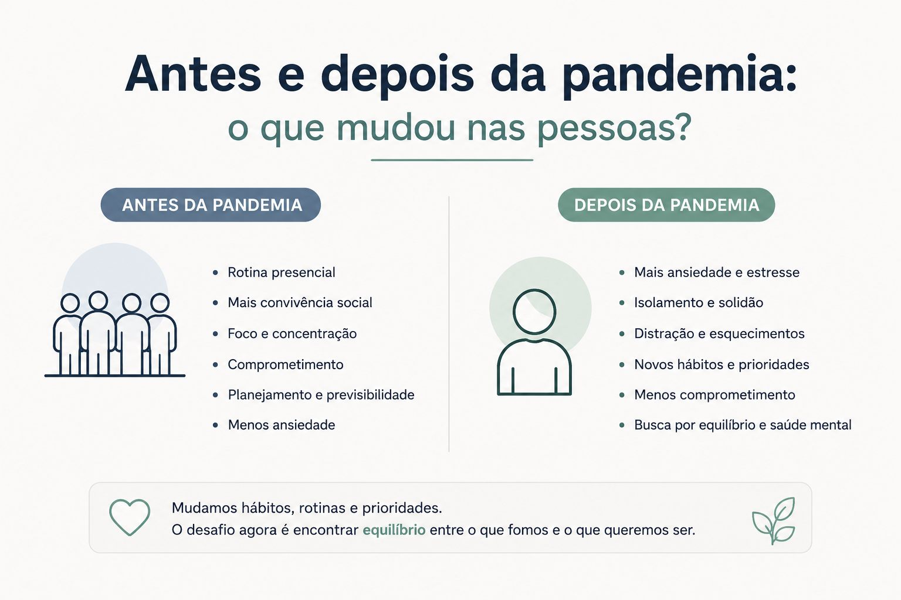
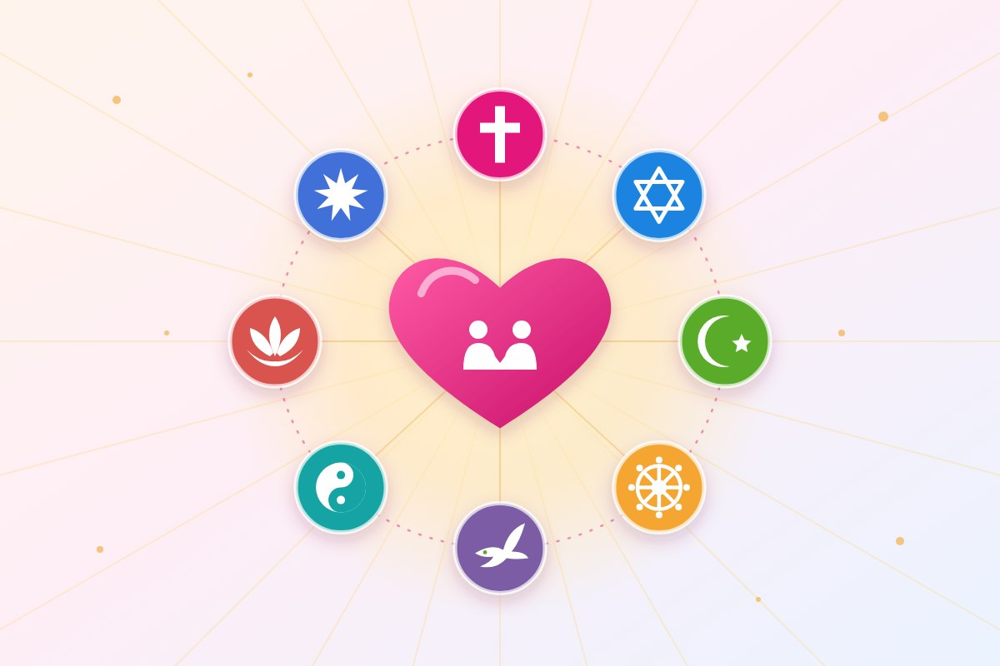

Comportamento
Antes e depois da pandemia: o que mudou nas pessoas?

A pandemia da COVID-19 não mudou apenas a rotina do mundo. Ela alterou comportamentos, relações humanas, hábitos profissionais, saúde emocional e até a forma como as pessoas enxergam a vida, o tempo e os compromissos.
Mesmo após o fim das restrições, muitos reflexos continuam presentes no dia a dia.
Algumas mudanças trouxeram evolução e mais consciência. Outras revelaram desafios emocionais, sociais e comportamentais que ainda estão sendo enfrentados.
A vida acelerou, a mente também...
Antes da pandemia, grande parte das pessoas seguia uma rotina previsível:
- trabalho presencial;
- horários definidos;
- encontros frequentes;
- convivência social constante.
Com o isolamento, tudo mudou rapidamente. O medo, a insegurança, as perdas e o excesso de informações criaram um cenário de tensão contínua.
Após esse período, muitas pessoas passaram a viver:
- mais ansiosas;
- emocionalmente cansadas;
- distraídas;
- impacientes;
- mentalmente sobrecarregadas.
Hoje é comum ouvir frases como:
- “Minha memória piorou.”
- “Não consigo mais me concentrar.”
- “Perdi a vontade de socializar.”
- “Estou sempre cansado.”
O aumento dos esquecimentos e da distração
Uma das mudanças mais percebidas após a pandemia foi a dificuldade de concentração.
Muitas pessoas relatam:
- esquecimentos frequentes;
- perda de foco;
- dificuldade de concluir tarefas;
- excesso de distrações;
- cansaço mental constante.
Isso aconteceu por vários fatores:
- excesso de tempo em telas;
- ansiedade elevada;
- consumo exagerado de informação;
- mudanças bruscas de rotina;
- estresse prolongado.
Além disso, o hábito de fazer várias coisas ao mesmo tempo se intensificou:
- reuniões online;
- mensagens instantâneas;
- redes sociais;
- vídeos curtos;
- múltiplas abas abertas o tempo todo.
O cérebro passou a funcionar em estado de atenção fragmentada.
As relações humanas ficaram diferentes
O distanciamento social alterou a forma como as pessoas convivem.
Muitos perceberam:
- maior dificuldade em conversar pessoalmente;
- menos paciência;
- intolerância emocional;
- redução da empatia;
- afastamento social.
Ao mesmo tempo, outras pessoas passaram a valorizar mais:
- a família;
- amizades verdadeiras;
- saúde emocional;
- qualidade de vida;
- tempo livre.
A pandemia mostrou que o excesso de correria nem sempre significava felicidade.
O trabalho nunca mais foi o mesmo
O ambiente profissional sofreu uma transformação profunda.
Antes
- controle rígido de horários;
- cultura totalmente presencial;
- pouca flexibilidade.
Depois
- home office;
- reuniões virtuais;
- trabalho híbrido;
- maior busca por equilíbrio entre vida pessoal e profissional.
Mas junto disso surgiram novos problemas:
- dificuldade de separar trabalho e descanso;
- procrastinação;
- excesso de reuniões;
- baixa produtividade emocional;
- sensação constante de esgotamento.
A falta de comprometimento aumentou?
Muitas empresas, escolas e até relações pessoais passaram a perceber:
- atrasos mais frequentes;
- cancelamentos de última hora;
- dificuldade de assumir responsabilidades;
- menor tolerância à pressão;
- desmotivação.
Isso não significa que as pessoas “ficaram piores”, mas que muitas ainda carregam consequências emocionais e psicológicas do período pandêmico.
O problema é que, em alguns casos, o hábito da flexibilidade extrema acabou gerando:
- falta de disciplina;
- acomodação;
- dificuldade de manter constância;
- menor senso de responsabilidade coletiva.
A saúde mental entrou em evidência
Antes da pandemia, muitas questões emocionais eram ignoradas.
Depois dela, temas como:
- ansiedade;
- síndrome do pânico;
- depressão;
- burnout;
- TDAH;
- exaustão emocional
passaram a ser discutidos com mais frequência.
Isso trouxe dois lados:
Positivo
- mais informação;
- mais acolhimento;
- menos preconceito;
- maior busca por terapia.
Negativo
- excesso de autodiagnóstico;
- banalização de transtornos;
- dificuldade de lidar com frustrações;
- dependência emocional das redes sociais.
As pessoas passaram a valorizar mais o presente
A pandemia também deixou lições importantes.
Muitas pessoas passaram a:
- priorizar momentos em família;
- cuidar mais da saúde;
- desacelerar;
- buscar propósito;
- mudar de carreira;
- valorizar experiências em vez de bens materiais.
Houve uma mudança de mentalidade: “A vida pode mudar de uma hora para outra.”
Isso fez crescer a busca por:
- qualidade de vida;
- equilíbrio emocional;
- espiritualidade;
- autocuidado.
O impacto das redes sociais aumentou
Durante o isolamento, as redes sociais se tornaram companhia, distração e fonte de informação.
Mas o uso excessivo deixou marcas:
- ansiedade;
- comparação constante;
- dependência de validação;
- redução da atenção;
- excesso de estímulos.
O consumo rápido de conteúdo também contribuiu para:
- impaciência;
- dificuldade de leitura longa;
- necessidade constante de entretenimento imediato.
O que aprendemos com tudo isso?
A pandemia transformou o mundo e as pessoas.
Ela deixou marcas emocionais, sociais e comportamentais que ainda podem ser percebidas diariamente:
- na forma de trabalhar;
- de estudar;
- de se relacionar;
- de lidar com responsabilidades;
- e até de pensar sobre a própria vida.
Ao mesmo tempo, trouxe reflexões importantes sobre saúde mental, empatia, tempo e prioridades.
O grande desafio agora é encontrar equilíbrio:
- entre produtividade e saúde emocional;
- entre tecnologia e presença real;
- entre flexibilidade e comprometimento;
- entre velocidade e qualidade de vida.
Conclusão
O “antes” e o “depois” da pandemia não representam apenas uma mudança histórica. Representam uma transformação humana profunda.
Algumas pessoas se tornaram mais conscientes, resilientes e humanas. Outras ainda enfrentam dificuldades emocionais, cognitivas e sociais deixadas pelo isolamento, pelo medo e pelas mudanças abruptas da rotina.
Entender essas transformações é essencial para construir uma sociedade mais equilibrada, empática e preparada para os desafios do futuro.
Leia também

Qual é a causa de alguém humilhar outra pessoa?
O que está por trás de quem humilha — e como se proteger sem se diminuir.
Ler matéria
Como as pessoas te enxergam: hábitos que constroem ou prejudicam sua imagem
Pequenos comportamentos do dia a dia dizem mais sobre nós do que grandes discursos.
Ler matéria
Todas as religiões levam ao bem: amor, caridade e evolução
Muitos caminhos, um mesmo princípio: amar o próximo, praticar a caridade e evoluir a cada dia.
Ler matériaGostou desta matéria? Veja outras no blog, conheça nossas referências ou fale com a gente.